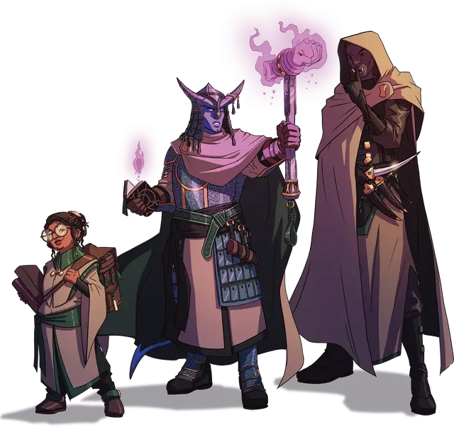

Учёный-манипулятор
Scholarly Mastermind
Маленький или Средний Гуманоид (Волшебник), любое мировоззрение

Класс Доспеха 12 (15 с доспехом мага)
Хиты 82 (15к8 + 15)
Скорость 30 футов
| мод | спас | ||
|---|---|---|---|
| СИЛ | 10 | +0 | +0 |
| ЛОВ | 14 | +2 | +2 |
| ТЕЛ | 13 | +1 | +1 |
| мод | спас | ||
|---|---|---|---|
| ИНТ | 18 | +4 | +7 |
| МДР | 16 | +3 | +6 |
| ХАР | 14 | +2 | +2 |
Навыки Восприятие +6, История +7, Магия +7, Проницательность +6
Чувства пассивное Восприятие 16
Языки Общий
Опасность 5 (1800 опыта)
Бонус мастерства +3
Особенности
Языки. Знает Общий и ещё три языка.
Действия
Мультиатака. Манипулятор совершает две атаки Разрядом магии или Кинжалом отравленного разума.
Разряд магии. . Рукопашная или Дальнобойная атака заклинанием: +7 к попаданию, досягаемость 5 футов или дистанция 60 футов, одна цель. Попадание: 26 (4к10 + 4) урона электричеством. Если целью является существо, оно не может использовать реакции до начала своего следующего хода.
Кинжал отравленного разума. . Рукопашная или Дальнобойная атака оружием: +7 к попаданию, досягаемость 5 футов или дистанция 20/60 футов, одна цель. Попадание: 6 (1к4 + 4) колющего урона плюс 10 (3к6) урона психической энергией. Если целью является существо, оно должно преуспеть в спасброске Мудрости Сл 15, иначе станет испуганным до конца своего следующего хода.
Использование заклинаний. Манипулятор может накладывать следующие заклинания, используя Интеллект в качестве базовой характеристики (Сл спасброска от заклинания 15):
• Неограниченно: смена обличья [alter self], свет [light], волшебная рука [mage hand];
• 1/день каждое: понимание языков [comprehend languages], доспехи мага [mage armor], область истины [zone of truth].
Описание
Учёные-манипуляторы - это грозные лидеры академических исследовательских организаций, ответственные за планирование и проведение операций, которые раскрывают тайны прошлого. Некоторые манипуляторы являются директорами академий или университетов. Другие действуют индивидуально и тайно, преследуя цели, которые могут сильно отличаться от целей остальной части их организации.
УЧЕНЫЕ ВСЕВИДения
Верность Всевидению — это научная фракция, действующая в основном в маркетском метрополисе Анк'Ха-рел. Хотя большинство членов фракции - академики, не знакомые с боем, полевые агенты фракции - опытные археологи, которые также обучены противостоять и преодолевать угрозы, таящиеся в глубинах Экзандрии.